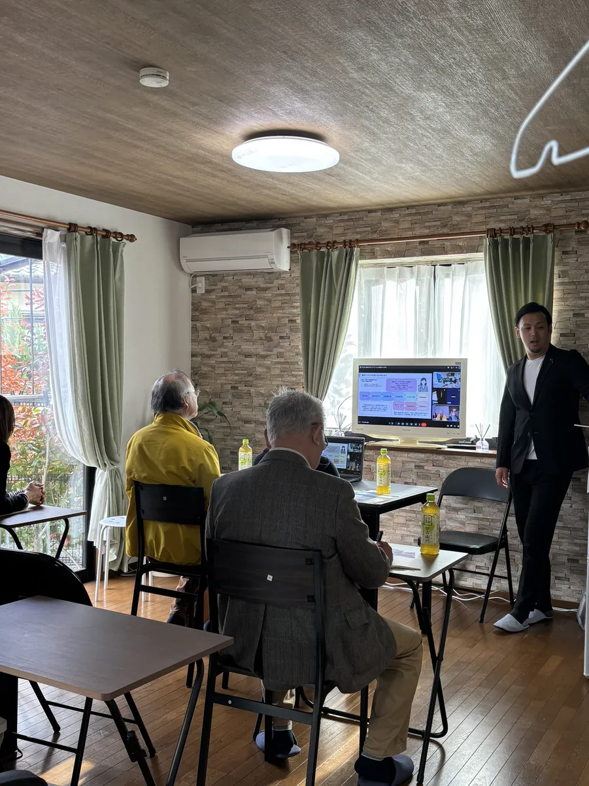
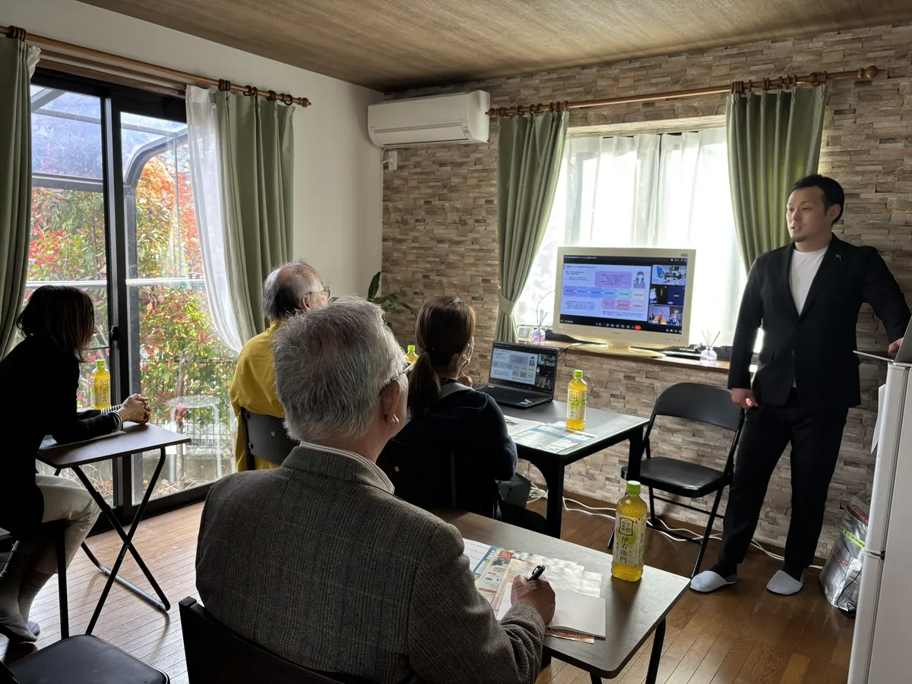

地域連携推進会議を開催しました（COCOHAUS野間）
2026年4月21日掲載
開催の目的と概要。
弊社のグループホーム「COCOHAUS野間」にて、地域との連携を深めるための「地域連携推進会議」を開催いたしました。この会議は、地域の皆さまに私たちの事業運営を公開し、相互理解を深めることで、利用者様が安心して地域生活を送れる環境づくりを目的としています。
- 日時
- 4月10日（木） 16:00～
- 場所
- COCOHAUS野間
- ご出席者
- 大池自治会長、民生委員副会長、民生委員、小田部町内会長
確認版：開催日は元の記事のまま「4月10日（木）」としています。2026年4月10日は金曜日のため、正式記録と照合して年・曜日を整えます。
当日の内容と主なトピックス。
会議では、まず現在の運営状況や取り組みについて詳しくご説明し、その後、施設内の見学を行っていただきました。
1. 事業所の紹介と運営体制
障がい福祉サービス（グループホーム）の役割や、COCOHAUSでの1日の生活サイクル、スタッフの配置状況について共有しました。
2. サービスの透明性と質の確保
- BCP（事業継続計画）の説明：災害発生時に利用者様の安全をどう守るか、具体的な計画を共有しました。
- 権利擁護と安全対策：日々の「ヒヤリハット」事例の共有や、社内研修を通じた虐待防止・サービス向上への取り組みについてご報告しました。
3. 地域とのつながりについて
利用者様が地域の一員として自然に過ごせるよう、町内会への参加や、地域のイベントへの積極的な関わりについて意見交換を行いました。
当日の様子。


質疑応答・意見交換。
地域の代表である皆さまより、貴重なご質問や温かいご意見をいただきました。
- Q. スタッフの夜間の体制は？
- 夜間もスタッフが常駐し、緊急時にも迅速に対応できる体制を整えています。
- Q. 地域行事への参加について
- ぜひ町内会の清掃活動や季節の行事など、無理のない範囲で参加させていただき、顔の見える関係を作っていきたいと考えています。
参加者様からの声
- 大池校区民生委員副会長：「健常者と障がい者の間に壁をつくらず、共に生きる地域にしていきたいですね」
- 大池自治会長：「施設の様子がよく分かり安心しました。地域全体での理解を広めていきましょう」
まとめ。
今回の会議を通じて、地域の皆さまが福祉サービスに対して高い関心を持ってくださっていることを改めて実感いたしました。「COCOHAUS野間」が、ただの福祉施設ではなく、地域の一部として皆さまに親しまれ、信頼される場所となるよう、今後も定期的な情報共有と交流を続けてまいります。ご多忙の中ご出席いただいた皆さま、誠にありがとうございました。
まずは、話してみませんか。
ご本人はもちろん、ご家族・相談支援専門員の方もご相談ください。